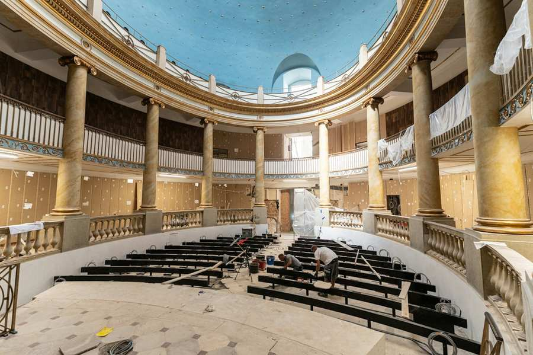
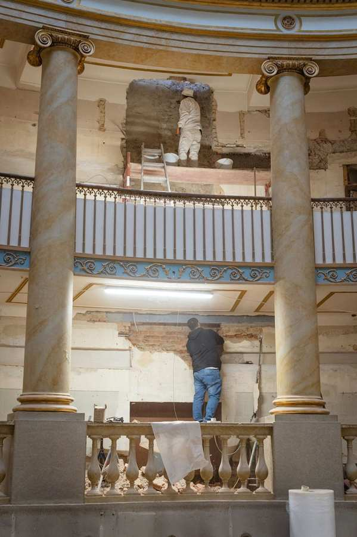
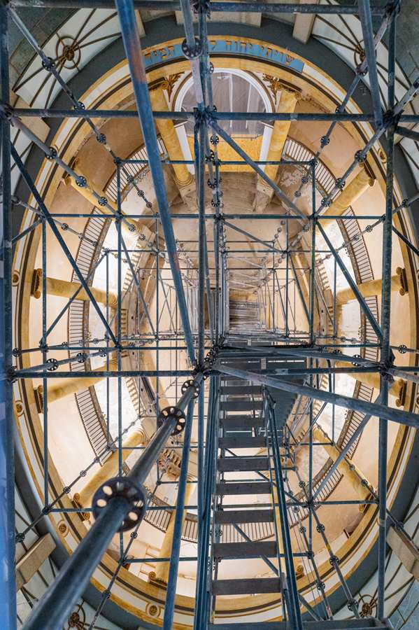
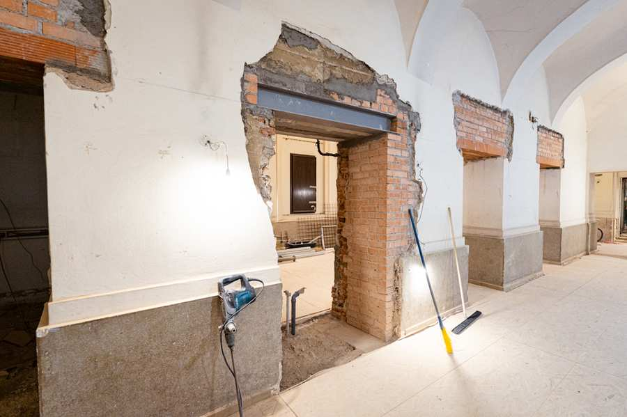
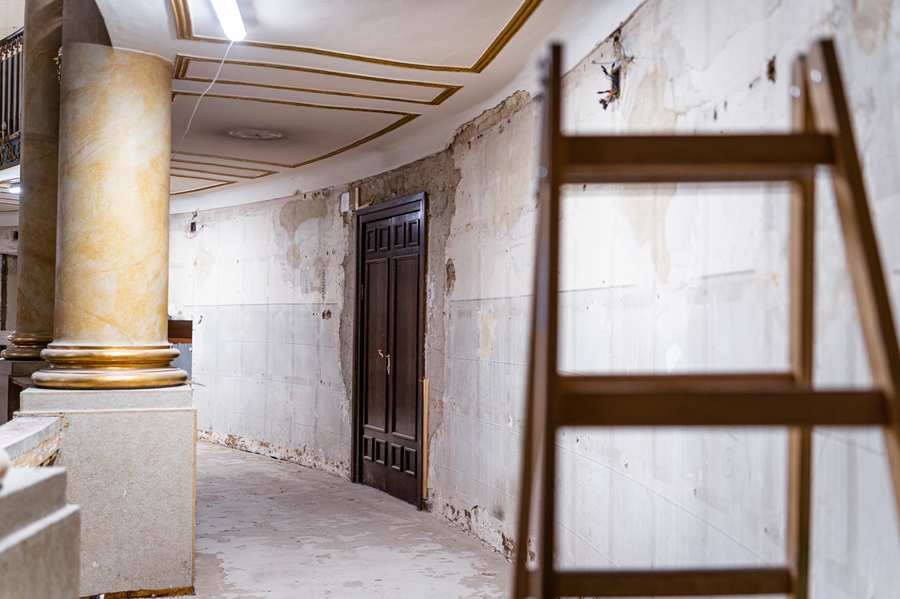
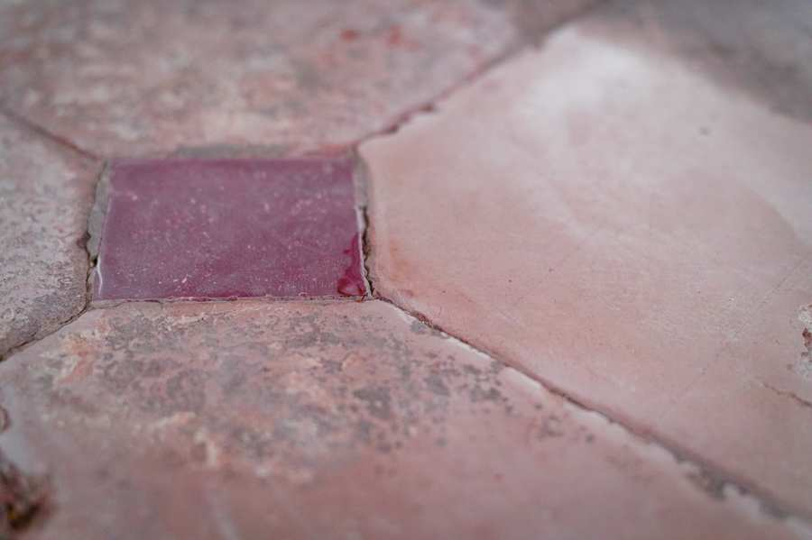
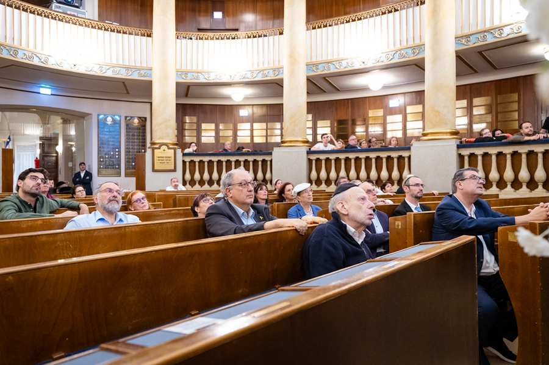
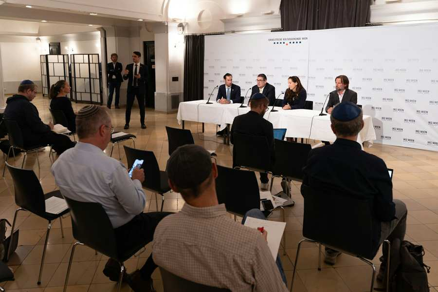

Bildquelle: IKG/Morgensztern
Am 9. September 2026, zwei Tage vor Beginn der Hohen Feiertage, hat die jüdische Gemeinde ihr spirituelles Zentrum in der Seitenstettengasse nach zehneinhalb Monaten Bauzeit feierlich wiedereröffnet.
Folgend die Bilder des frisch restaurierten und sanierten Stadttempels


Bildquelle: IKG/Morgensztern
Der Stadttempel ist das spirituelle Zentrum der jüdischen Gemeinde in Wien und die größte Synagoge Österreichs. Er überlebte als einzige größere Wiener Synagoge das Novemberpogrom 1938. Im Jahr 2026 feiert der von Josef Kornhäusl errichtete Stadttempel sein 200-jähriges Bestehen. Die Restaurierung und Sanierung des Wiener Stadttempels macht dieses spirituelle und kulturhistorische Zentrum des österreichischen Judentums zu erhalten und bereit für die Zukunft.
Besuche und Gebete
- Besuche in der IKG Wien sowie Lieferungen erfolgen während der Umbauarbeiten über den Rabensteig 3.
- Gebte finden nun wieder regulär im Stadttempel statt.
- Guided Tours werden ab Winter 2026 angeboten.
Rückblick zur Restaurierung und Sanierung des Stadttempels
Juli 2026

Im Wiener Stadttempel laufen die Restaurierungs- und Sanierungsarbeiten weiterhin auf Hochtouren. In mehreren Bereichen des Gebäudes wird parallel gearbeitet. Die Wandvertäfelungen werden montiert, die technische Infrastruktur und die Elektrik fertig installiert und komplettiert, Böden werden neu verlegt, es wird gespachtelt und gemalt.
Nachdem die Laterne fertiggestellt wurde, ist nun auch die Kuppel ausgemalt und erstrahlt wieder im gewohnten Blauton. Auch die Aufgänge zu den Galerien wurden bereits ausgemalt, die Säulen fertig restauriert und die Decken in der Synagoge bearbeitet.
Die Unterkonstruktionen der neuen Vertäfelungen, hinter denen sich auch die Haustechnik verbirgt, sind bereits montiert, und im ersten Obergeschoss ist stellenweise bereits die finale Wandvertäfelung angebracht. Im zweiten Obergeschoss wurden bereits Teppiche und Akustikpaneele verlegt sowie die bekannten Möbel wieder aufgestellt, aber noch nicht fixiert – das passiert im Zusammenspiel mit dem dort geplanten Treppenlift und einer neuen Sitzreihe.
Die Sukkah ist fertiggestellt und wartet darauf, im kommenden Herbst festlich geschmückt zu werden.
Die ebenfalls luftführenden Stahlkonstruktionen für die Sessel im Erdgeschoss sind aufgestellt; der neue Steinboden wird an diese angearbeitet. Einer feierlichen Eröffnung im September steht – mit Gottes Hilfe – nichts im Wege.
Die verbleibenden Wochen sind auf die Minute durchgetaktet, und vor Ort wird eifrig gearbeitet und montiert.
März 2026

Die Baustelle ist in vollem Gange, und sämtliche Gewerke arbeiten parallel in unterschiedlichen Bereichen des Gebäudes. Der derzeit sichtbarste Fortschritt ist der Abbau des großen Gerüsts im Innenraum. Dadurch wurden neue Arbeitsabschnitte zugänglich, und der Blick auf die restaurierten Strukturen in der Lichtkuppel ist nun frei.
Im Zuge der laufenden Maßnahmen wurden die alten Schleusen entfernt. Gleichzeitig erfolgen umfangreiche Vorbereitungen für die technische Infrastruktur: Es werden Schlitze für die Elektrik hergestellt sowie Stemmarbeiten für die Haustechnik durchgeführt. Darüber hinaus konnte der alte Türrahmen freigelegt werden, ebenso ein historischer Bodenbereich im Bereich der Bima – ein besonderes Fundstück, auch zur Freude des Bundesdenkmalamtes.
Unser besonderer Dank gilt der Bundesregierung, der Stadt Wien sowie allen Spenderinnen und Spendern, die dieses Projekt jeweils zu einem Drittel finanzieren. Wenn auch Sie dieses Vorhaben unterstützen möchten, freuen wir uns über Ihre Spende: https://www.stadttempel.at/
In den Zugängen und Nebenräumen der Synagoge werden derzeit intensiv bauliche Maßnahmen umgesetzt, die vorrangig der Barrierefreiheit und Sicherheit dienen. Die Zugänge erhalten entsprechend neue Treppen; an relevanten Stellen werden zudem Treppenlifte eingebaut. Die WC-Anlagen werden umfassend modernisiert und, wo erforderlich, barrierefrei gestaltet. Brandschutzvorhänge, Schleusen und Notbeleuchtung werden gemäß den geltenden Vorgaben umgesetzt.
Insgesamt verlaufen die Arbeiten weiterhin planmäßig und mit sichtbarem Fortschritt in mehreren zentralen Bereichen gleichzeitig. Nach Pessach werden die groben Arbeiten weitgehend abgeschlossen sein, sodass der Innenausbau voll durchstarten kann.
Dezember 2025

Die Restaurierungs- und Sanierungsarbeiten im Wiener Stadttempel der Israelitischen Kultusgemeinde Wien (IKG) haben am 20. Oktober wie vorgesehen begonnen und entwickeln sich bislang ohne Verzögerungen. Die Arbeiten liegen im Zeitplan; auch die Kosten bewegen sich derzeit innerhalb des veranschlagten Budgets.
Im Zuge der Bauarbeiten wurden die historischen Steinsockel sowie der historische Stein-Bodenbelag freigelegt.
Zu den bisherigen Maßnahmen zählen vor allem Abbrucharbeiten sowie die Herstellung notwendiger Durchbrüche. Derzeit konzentriert sich das Baugeschehen auf die technischen Einbauten in der Laterne des Gebäudes. Das umfangreiche Gerüst, das fast den gesamten Innenraum einnimmt, soll so bald wie möglich wieder entfernt werden.



Oktober 2025

Am 17. Oktober 2025 erfolgte im Wiener Stadttempel der offizielle Start der Restaurierungsarbeiten mit einem Pressetermin. Dabei wurde auch ein Kunstprojekt von Gottfried Helnwein vorgestellt, das die Sanierung unterstützt. Zehn Kinder der jüdischen Gemeinde wurden im Rahmen eines Castings porträtiert; eines von ihnen wird Helnwein in einem großformatigen Gemälde darstellen, das 2026 zum 200-jährigen Jubiläum gezeigt und zugunsten der Restaurierung versteigert wird. Das Bild wird auf Holzpaneele aus dem Stadttempel, die dem Künstler symbolisch übergeben wurden, nach der Fertigstellung affichiert. Architekturbüro KENH präsentierte bei diesem Anlass die Restaurierungspläne, deren Ziel die Bewahrung des historischen Erbes und die Sicherung der Zukunft des Gebäudes ist. Die Kosten betragen 10,5 Millionen Euro; Spenden sind weiterhin über www.stadttempel.at möglich.
September 2025 – Alef Alef

Ab dem 20. Oktober 2025 wird der Betrieb des Restaurants Alef Alef während der Restaurierung des Stadttempels angepasst. Gebete finden im Gemeindezentrum statt, Kidduschim als Steh-Empfänge im Restaurantbereich. Schabbat-Mahlzeiten bleiben nach Anmeldung möglich, ebenso kleinere private oder familiäre Veranstaltungen.
September 2025 – Sitzung des Kultusvorstands
Am 15. September 2025 berichtete Architektin Natalie Neubauer dem Kultusvorstand über die konkreten Baupläne zur Sanierung des Stadttempels. Die Arbeiten erfolgen in Abstimmung mit dem Bundesdenkmalamt und umfassen technische Modernisierung und Barrierefreiheit. Präsident Oskar Deutsch gab bekannt, dass Stadt Wien und Bundesregierung je ein Drittel der 10,5 Millionen Euro beitragen; mit Spenden sei die erste Projektphase finanziert. Diese Phase beinhaltet die Restaurierung des Tempels, während Phase zwei – Sanierung des Gemeindezentrums und der Fassade – erst später folgen soll. Der Vorstand stimmte der Umsetzung zu.
September 2025 – Bürgerparlament

Am 10. September 2025 fand das zweite Bürgerparlament zur Restaurierung und Sanierung des Stadttempels statt. Das Architekturbüro KENH stellte die endgültigen Pläne vor, deren Umsetzung im Oktober beginnt. Geplant sind Verbesserungen von Akustik, Licht, Heiz- und Kühlsystem sowie Barrierefreiheit. Das Farbkonzept wird mit dem bisherigen Blauton der Kuppel beibehalten. Neu hinzu kommen ein Bereich für halachisches Händewaschen, eine angepasste Garderobe sowie ergonomische Sitzbänke mit Leselampen. Bei der Veranstaltung konnten Gemeindemitglieder Fragen stellen und Anregungen einbringen.
Januar 2025
Am 28. Januar 2025 besuchte Bürgermeister Michael Ludwig den Wiener Stadttempel und kündigte an, dass die Stadt Wien ein Drittel der rund 10 Millionen Euro umfassenden Restaurierungskosten übernimmt. Ein weiteres Drittel trägt der Bund, das restliche Drittel wird über Spenden finanziert. Die Sanierung umfasst Denkmalpflege, Verbesserung der Akustik, des Raumklimas und der Barrierefreiheit sowie eine Modernisierung der Sicherheitsanlage. Der Stadttempel, 1826 erbaut und während der Novemberpogrome 1938 als einzige Wiener Synagoge erhalten geblieben, soll bis zu seinem 200-jährigen Bestehen im Jahr 2026 vollständig restauriert werden.
September 2024

Am 12. September 2024 wurden bei einer Pressekonferenz die Restaurierungspläne des Wiener Stadttempels vorgestellt. Neben IKG-Präsident Oskar Deutsch und Generalsekretär Benjamin Nägele präsentierten die Architekten Natalie Neubauer und Eric-Emanuel Tschaikner vom Büro KENH die geplanten Maßnahmen. Der Baubeginn ist für Herbst 2025, die Fertigstellung für Herbst 2026 vorgesehen. Die Arbeiten beinhalten die Wiederherstellung der historischen Anmutung, die Verbesserung von Akustik, Raumklima, Barrierefreiheit und Sicherheitsanlagen sowie die Sanierung der Gemeindeinfrastruktur. Der Stadttempel, 1826 erbaut und die älteste noch aktive Synagoge Österreichs, soll damit für die Zukunft erhalten werden. Die Bevölkerung wird zu Spenden eingeladen; ab 2.500 Euro kann ein Stern der Kuppel gewidmet werden.
März 2024
Der Kultusvorstand der Israelitischen Kultusgemeinde Wien beschloss im März 2024 einstimmig, die Architektin Natalie Neubauer und den Architekten Eric-Emanuel Tschaikner (KENH Architekten ZT GmbH) mit der Planung der Restaurierung und Sanierung des Wiener Stadttempels zu beauftragen. Ziel ist es, die Synagoge rechtzeitig zum 200-jährigen Jubiläum 2026 zu erneuern. Die Arbeiten umfassen die Sanierung der Haustechnik, Brandschutzmaßnahmen, Barrierefreiheit, Akustik, Lüftung und Heizung. Da das Gebäude unter Denkmalschutz steht, erfolgen alle Arbeiten in Abstimmung mit dem Bundesdenkmalamt. Das Gemeindezentrum, das nicht denkmalgeschützt ist, soll an die Bedürfnisse der Gemeinde angepasst werden. Die Finanzierung erfolgt über öffentliche Förderungen und Fundraising, nicht aus dem laufenden IKG-Budget. Neubauer verzichtet auf zehn Prozent ihres Honorars.